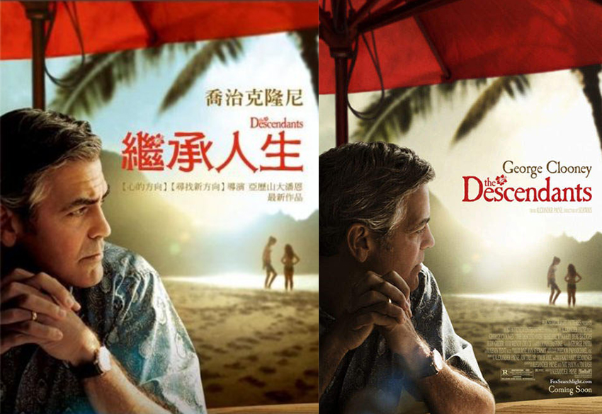

前天晚上在家重看了喬治克隆尼George Clooney的電影「繼承人生the Descendants」，電影中正好描述到“選擇善終、好好告別”的情節。電影開場就是男主角的老婆意外受傷昏迷，在醫院已躺了23天，最終因為老婆早已事先簽下「安寧緩和醫療暨維生醫療抉擇意願書」、「器官捐贈同意書」而讓男主角和大女兒選擇放手....
|  |
5/25那天早上，爸爸腹吐黑水，病況危急，身體的疼痛到達極限，幾乎是每一個小時都在喊痛，無法安眠……醫護團隊詢問媽媽和我們關於照護爸爸的未來方向是什麼？但明明前一天晚上，我和弟妹們還在討論爸爸要化療積極處置、還是選擇安寧照護？沒想到才隔一晚，爸爸的病況就急轉直下，讓我們措手不及，彷彿爸爸的身心直接幫我們做了決定般，竟然就依著他半個月前剛到院檢查出不良腫瘤時，就一直跟我們叨念著的：「不要化療了、不要插管、不要浪費錢醫治了！」，逼著我們做決定…
是我們捨不得！身為兒女怎能放棄任何治療爸爸病痛的可能？但是，聽完醫護團隊評估，即便化療，疑似胰臟癌末期最多只能延長6個月的生命，更何況爸爸的癌細胞已經擴散到身體各處，也可能是找不到源頭的「原發部位不明的轉移癌」，治療困難重重，若需要施行急救時，各種侵入性的急救措施會接踵而來。
最終媽媽說，不要讓爸爸再受苦了，就在現場我們四個兄弟姊妹也同意的情況下，媽媽簽了「不施行心肺復甦術或維生醫療同意書」。然後爸爸在我們的陪伴下，打了止痛藥，慢慢減輕身體的疼痛、開始安眠休息，在5/30下午，身體數據慢慢降低後，平靜地離開我們。
以前看這部電影時，對這段情節無感，而今看著這些與自己人生現實重疊的片段，我竟忍不住悲從中來，不停落淚。 電影主要訴說的重點是：崩壞的家庭關係重建、中年男子心境和提到的環境保護議題。導演用黑色幽默的敘事手法，以沉重的議題開場，帶著觀眾跟著男主角進入他的生活、經歷他的各式人生問題，在穿插荒謬的劇情鋪排裡，看到如同和我們真實人生一樣，也會上演類似的橋段：要面臨傷痛，卻也時而震驚、時而挫敗，處理大女兒的叛逆和小女兒的古怪，也要理性處理家族遺產土地買賣事宜，又忽然發現老婆已出軌，甚至在大女兒建議下，一起去找小王；而這個過程卻也讓男主角找回人生和家庭的價值。
在這段經歷爸爸重病、住院、過世的期間，我自己的家庭也正面臨挑戰，進入青春期的小女兒開始拒學不到校上課，讓我焦頭爛額，也因此跟老公的溝通屢爆衝突，這也是因為我們二人長久以來的價值觀和處理事情的方式不同。 還有兒子正面臨學測申請入學的一連串書審、面試，擔心兒子是否能按照自己的興趣申請到合適的學校科系…？原本就已自學一年半的大女兒，正在準備下一階段的學習和大學考試，憂慮著她是否有能力面對下半年的一連串準備事宜，應有接受挫折打擊的能力…？公公才剛完成第二次胃癌化療療程，是否能順利養好身體多陪伴我們一些時日...？還有容易焦慮的婆婆是否能應付公公的病情和日常照護需求？
種種人生的悲喜苦樂在此時交織，逐漸邁入中年的我，其實也跟片中的男主角-Matt有著類似的境遇和心情。因此對於導演細膩的手法、演員自然的詮釋和電影想傳達的訊息，非常有感悟。面對艱難時刻，再多的憤怒、抱怨、悲傷和打擊，根本無濟於事，我只能跟Matt一樣，調整好自己的心情，選擇傾聽、溝通、放下和尊重，如同爸爸人生最終時不斷傳達給我們的訊息 - - 平靜看待事情的本質，耐心理性的處理事情。
或許爸爸的人生，也有很多無奈、無力的時刻，但是在人生的最終點時，他也只能選擇放下、平靜接受。記得大弟在爸爸過世當天晚上，拿給我爸爸最後在醫院，以他常用的粉紅計算紙，寫下的一段話：「不到三萬個歲月，日夜漫漫交替，迎風沐雨，（笠）立足大地，（或長）笑過哭過，曾經胸懷壯志，也失落過，但從不放棄，更想繼續走下去，順天應理，不敢僭越，無奈魅影遠至，措不及防，不得不要走，滿心躊躇，絲絲綿綿，（抵）捫心問，無奈寸寸離天…」
還有去年8月，爸爸在臉書FB發佈一篇文章，提到「當要離開時，需要孩子們平和的陪伴在身旁，讓我放下一切，心無罣礙的，安心的，靜靜的走…」彷彿預言般提早告訴我們對於人生終點的想法。
辦完爸爸的告別式後，在Netflix重看了這部電影，也因此療癒了我悲傷灰色的心情。本來在其他電影裡愛耍帥的喬治克隆尼，化身中年喪偶憂慮的老男人，自然流露不嘩眾取寵的演技，果然讓他因此片拿下金球獎最佳戲劇類電影男主角。